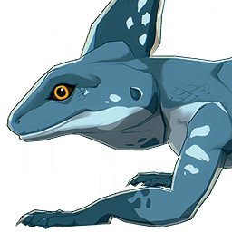

Azure Lizard
Resources

Material for crafting.
A carnivorous reptile that mainly lives in waterside and wetland environments, with a leathery scale-covered skin, a blue body, and meaty thorns on the back, likes a moist and warm environment, and prefers to eat small shrimps and crabs.